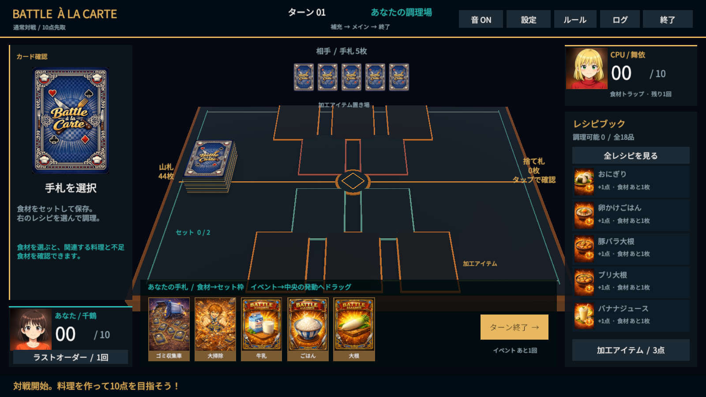

ANIANI ORIGINAL / NEW 3D EDITION
Battle à la carteUnity版（3D版）
3Dの調理台で、あなただけの一皿を。
材料カードを集め、料理を完成させて得点を競う料理カード対戦ゲーム。CPU戦・ストーリーに加え、通信対戦を試験提供。
Windows・Android v0.4.0 / リリース日：2026-09-27

Web版とは別の、新しい作品
Unityによる3D調理台と料理演出で楽しむ、Web版とは別の作品です。CPU戦・ストーリーモードに加え、v0.4.0ではあにあにアカウントのログイン・新規登録と共通コイン表示に対応。Web版で作られた部屋に参加する通信対戦も試験提供します。
v0.4.0 アップデート
2026-09-27 リリース。タイトル画面から通信対戦まで、遊び方と演出を拡充しました。
- タイトル画面、デイリーログインボーナス、あにあにアカウントのログイン・新規登録、共通コイン表示を追加。
- メニュー演出とクレジットを追加。手札の横スクロール、相手のスキル詳細、カード選択中の盤面確認に対応。
- ONLINE BATTLE（試験提供）：Web版が作成した部屋に参加。3Dテーブルの対戦画面、ドラッグでのセット・発動、ドロー・捨て札のアニメーション、料理・イベント・スキルの演出に対応。
- CPU戦・ストーリー・通信対戦で、右上「メニュー」から降参できます。CPU戦・ストーリーでの降参は敗北となり、試合数にカウントされ、コインは獲得できません。
- テーブルのイラストをプレイヤー向きにし、セット・強化ゾーンを透過表示に変更。
- Windows版の黒画面の問題を修正。
遊び方と対応環境
Windows 64-bit: ZIPをすべて展開し、BattleALaCarte.exeを起動してください。同梱のフォルダ・ファイルはそのまま一緒に保管し、移動・削除しないでください。
Android試験版: Android 8.0以降のARM64端末が対象です。APKをダウンロードし、「不明なアプリのインストール」を許可してインストールしてください。同じパッケージのため、v0.3.xから更新できます。Google Play外の試験版です。
Unity版はWebGL・ブラウザプレイおよびiPhoneに対応していません。Android版での通信対戦は未確認です。
通信対戦のやり方
- Web版（PC版またはスマホ版）で「オンライン対戦」を開き、合言葉の部屋または公開部屋を作ります。
- Unity版でタイトル画面→メニューの「オンライン対戦」を開きます。
- Web版に表示された6桁の合言葉を入力して「合言葉で参加」、または「公開部屋を更新」→一覧の「参加」を選びます。
- 先攻はランダムです。自分のターンに手札をタップで確認し、盤面のセット枠へドラッグでセット、中央の「発動」へドラッグでイベントを発動します（確認画面あり）。
- 右上「メニュー」から降参・退出できます。
通信対戦の注意事項
- 通信対戦は試験提供で、今後仕様・画面が変わる可能性があります。
- Unity版は部屋を作れません。Web版で作られた部屋（6桁の合言葉 または 公開部屋）への参加のみです。
- 切断後の再接続・復帰は未対応です。
- Android版での通信対戦は未確認です。
- インターネット接続が必要です。
- 降参は相手のWeb版が最新版であることが必要です。
本作品の画像・文章・ゲームデータおよび配布ファイルの無断転載・無断配布を禁止します。